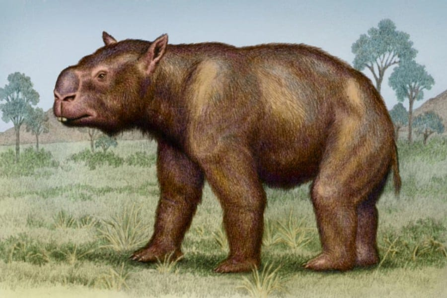

🐾 Resum Ràpid
🌍 Hàbitat i Època: El Regnat de l'Outback
El Thylacoleo va dominar el continent australià durant més de 2 milions d'anys, fins a la seva misteriosa extinció fa uns 40.000 anys. La seva desaparició és objecte de debat, ja que coincideix amb canvis climàtics dràstics i l'arribada dels primers humans al continent, amb qui segurament va entrar en conflicte.
L'Ambaixador de les Coves: Gràcies a les troballes a les coves de la plana de Nullarbor, sabem que no només era un animal terrestre. Les marques d'urpes a les parets suggereixen que era un escalador àgil, capaç de moure's per les altures per llançar-se sobre les preses des de dalt, exercint un paper similar al d'un lleopard marsupial.
Mestre de l'Emboscada: No tenia la constitució d'un perseguidor de llarga distància. El seu cos era compacte i extremadament musculat, dissenyat per a la potència bruta i l'atac sorpresa en zones de vegetació densa o boscos oberts, on el camuflatge i la força inicial eren les seves millors aliades.
💀 Una Enginyeria Biològica Única
L'anatomia del Thylacoleo és el que els científics anomenen un "disseny des de zero". Com que no descendia de carnívors amb ullals clàssics, l'evolució va improvisar amb les eines que tenia:
Les "Tisores de Podar" (Dents Carnisseres): En lloc de canins llargs, feia servir els seus incisius per subjectar, però el terror real venia de les seves premolars massives. Aquestes dents van evolucionar fins a convertir-se en fulles rectes i afilades que actuaven com unes tisores industrials, capaces de llescar teixits i trencar ossos amb un sol moviment.
La Pressió Absoluta: Per la seva mida, el Thylacoleo tenia la mossegada més potent de qualsevol mamífer, superant proporcionalment la del lleó africà. El seu crani tenia zones d'inserció muscular gegantines que li permetien clavar les dents a la gola de les preses fins a l'asfíxia.
El Polze de l'Infern: La seva característica més distintiva era el polze oposat amb una urpa retràctil enorme. Aquesta eina actuava com un ganxo de carnisser per immobilitzar preses que el duplicaven en mida, com el gegantí Diprotodon.
🦴 El "Tercer Peu" i l'Equilibri: Seguint l'herència dels seus parents diprotodonts (com els cangurs), posseïa unes vèrtebres caudals extremadament fortes. Es creu que podia recolzar-se sobre la cua per formar un trípode, permetent-li aixecar el tren davanter per lluitar o subjectar la presa amb els braços sense perdre l'estabilitat.
🏺 El "Lleó" de Richard Owen
La descripció del Thylacoleo va marcar un abans i un després en la comprensió de la fauna extinta d'Austràlia, gràcies a la visió d'un dels grans noms de la ciència.
La Intuïció de Sir Richard Owen (1858): El cèlebre paleontòleg que va inventar el terme "Dinosauria" va ser qui va donar nom a aquest depredador. Malgrat només disposar de fragments, Owen el va definir com "un dels depredadors més voraços de tots els temps". Tot i que la idea d'un "lleó marsupial" semblava una bogeria llavors, els fòssils complets trobats posteriorment li van donar la raó.
El Testimoni de l'Art Rupestre: A la regió de Kimberley, s'han identificat pintures que mostren animals amb la morfologia exacta del Thylacoleo. Aquestes representacions confirmen que van coexistir amb els humans i ens aporten una dada clau: tenia ratlles a l'esquena. Aquesta pista suggereix un camuflatge perfecte per amagar-se entre les ombres de la vegetació densa.
🧬 L'Enllaç Evolutiu: El "Coala Carnisser"
L'evolució del Thylacoleo és el millor exemple de com la natura pot reciclar estructures per a funcions totalment oposades.
Un Parentiu Inesperat: Encara que es comporti com un gran felí, el Thylacoleo és un Diprotodont. Això vol dir que està més a prop d'un coala o un cangur que no pas de qualsevol carnívor modern. És, essencialment, un "coala que va decidir menjar carn".
L'Enginyeria del Reciclatge: Com que els seus avantpassats eren herbívors, no tenia els canins dels gats. L'evolució va agafar les dents frontals (les que un coala fa servir per mastegar eucaliptus) i les va esmolar fins a convertir-les en dagues, transformant les premolars en autèntiques tisores quirúrgiques.
És la prova que l'evolució és un mestre de l'adaptació, capaç de transformar un llinatge pacífic en la màquina de matar més eficient d'un continent.
🥊 Duel de Titans: Thylacoleo vs. Megafauna

El Diprotodon, un uombat gegant que pesava prop de 2.800 kg.
El Thylacoleo no buscava preses petites o fàcils; estava anatòmicament dissenyat per ser un assassí de gegants. El seu dia a dia era una lluita contra la megafauna més imponent del Plistocè.
L'Objectiu: El Diprotodon: La seva presa preferida era el Diprotodon, un parent llunyà del uombat de la mida d'un rinoceront blanc. Malgrat la diferència de pes abismal, el "Lleó Marsupial" era l'únic depredador natural capaç d'abatre'l en solitari.
Tècnica de l'Ancoratge: La seva estratègia era de precisió quirúrgica. Es llançava des d'una branca o s'emboscava per clavar les seves urpes de polze directament a la gola de la víctima. Un cop ancorat, tancava la seva mandíbula de ferro: les seves premolars de tisora estaven dissenyades per tallar les artèries caròtides o col·lapsar la tràquea en qüestió de segons.
🎬 Cultura Popular i Mites: El Record de la Por
Recreació hiperrealista de l'atac des dels arbres del Thylacoleo.(Imatge generada per IA)
La Llegenda del "Drop Bear": Una de les teories més fascinants és que la famosa llegenda australiana del Drop Bear —un coala gegant carnívor que cau dels arbres— no és només una broma per a turistes. Podria ser un record cultural atàvic, una memòria transmesa pels pobles aborígens que realment van témer el Thylacoleo fa 40.000 anys.
Més que un Gat, un "Ós" Marsupial: Tot i que el seu nom evoca un lleó, la seva biologia era molt més singular. A diferència dels felins que caminen sobre els dits, el Thylacoleo era plantígrad, com els óssos.
Això vol dir que recolzava tota la planta del peu al terra, cosa que li donava una estabilitat immensa per lluitar cos a cos amb preses gegants i una força de palanca superior per desmembrar la carn amb els seus poderosos braços.
💡 Sabies que...?
L'Extinció d'un Especialista
L'extinció del Thylacoleo és un cas d'estudi sobre com l'especialització extrema pot ser una arma de doble tall. Tot i ser un caçador d'elit, el seu destí va quedar segellat per dos factors imparables:
- El Canvi d'Escenari: A mesura que el clima d'Austràlia es tornava més àrid, els boscos densos que feia servir per emboscar van desaparèixer, convertint-se en sabanes obertes on era molt més difícil amagar-se.
- L'Impacte Humà: L'arribada dels primers humans va accelerar el procés. L'ús del foc per aclarir el terreny va destruir el seu hàbitat crític i va delmar les poblacions de Diprotodon. Sense les seves preses gegants, el "Lleó Marsupial" es va quedar sense nínxol.
Habilitats de Circ: La Postura del Vigilant
Gràcies a la seva cua musculosa i a la seva estructura òssia, posseïa una habilitat que el feia encara més inquietant:
El Trípode: Podia alçar-se completament sobre les seves potes posteriors, utilitzant la cua com a punt de suport. Aquesta postura no era només per lluitar; li permetia inspeccionar el terreny per sobre de les herbes altes.
Imaginar un depredador de 150 kg amb urpes de polze posat dret com un humà per vigilar la seva propera víctima és una de les imatges més fascinants i terrorífiques de la prehistòria australiana.
📚 REFERÈNCIES BIBLIOGRÀFIQUES
- Owen, R. (1858). Notes on the Affinities of Thylacoleo carnifex. Philosophical Transactions of the Royal Society.
- Wroe, S. et al. (2005). Bite club: comparative bite force in marine and terrestrial mammals and the prediction of predatory behaviour in fossil taxa. Proceedings of the Royal Society B.
- Wells, R. T. & Nicol, M. E. (1987). Thylacoleo carnifex: a new look at an old lion. Australian Natural History.
- Gillespie, A. K. (2007). Diversity and Evolution of Marsupial Lions (Thylacoleonidae), with descriptions of new specimens and taxa. University of New South Wales.